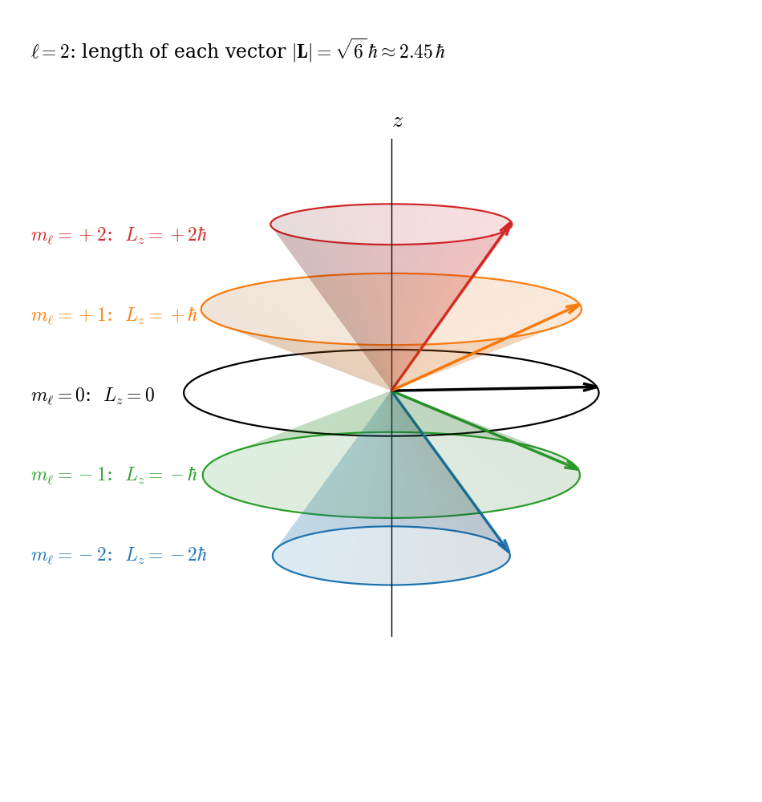
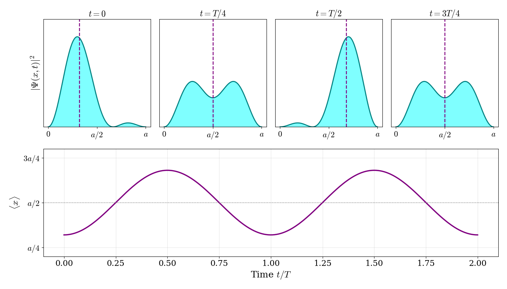

6 Operators and Mathematical Background
So far, we have solved the TISEq for a few simple systems, one at a time. To go further, we need a more general language, and the language of quantum mechanics is built on the concept of an operator. An operator is a rule that takes a function and turns it into another function. You already know many of them: taking a derivative, \(\frac{d}{dx}\), is an operator, and so is multiplying by \(x\). Operators are not unique to quantum mechanics (in chapter 1 we wrote the Hamiltonian of classical mechanics as a function that we can apply to a system), but in quantum mechanics they take center stage, since every physical quantity is represented by an operator. In this chapter, we will discuss the mathematics of quantum mechanical operators, and we will recast the results that we obtained for the analytically solvable models in this new language. As we will see, the new framework is actually simpler than what we have done so far. This simplicity, however, will open the door to the “stranger” side of quantum mechanics.
6.1 Operators in Quantum Mechanics
The central idea of this framework is that every observable (i.e., any quantity that can be measured in an experiment, such as position, momentum, or energy) is associated with an operator. To distinguish quantum mechanical operators from ordinary quantities, we write them with a hat, \(\hat{}\), on top. The state of the system is described by its wave function, and the operator tells us what to do to the wave function to extract information about the corresponding observable. Since the result of a measurement is always a real number, the operators associated with observables must have real eigenvalues.1 Operators with this property are called Hermitian, and we will discuss them in detail below.
In the wave mechanics formulation that we have used so far, wave functions are functions of the coordinates, and operators are combinations of derivatives and multiplications. An equivalent formulation, Heisenberg’s matrix mechanics, represents the state of the system as a vector of numbers and operators as matrices. The two pictures are related in the same way as a function is related to the list of its coefficients in some basis set, an idea that we will use extensively when we describe molecules in chapter 10.
The wave function itself is not directly observable. What we can measure in an experiment (or compute and compare with an experiment) are expectation values: averages of physical quantities. If we could prepare many identical hydrogen atoms, all in the ground state, and measure the distance between the electron and the proton in each one, the measurements would not all give the same result: they would scatter around some value. Their average is the expectation value of the distance, \(\langle r\rangle\), and the size of the scatter is the uncertainty, \(\Delta r\). For the \(1s\) state of hydrogen, \(\langle r\rangle=\frac{3}{2}a_0\) and \(\Delta r=\frac{\sqrt{3}}{2}a_0\approx0.87\,a_0\). (Notice that the average distance is larger than the most probable distance, \(a_0\), that we found from the radial probability distribution in chapter 5, because the distribution has a long tail at large \(r\).)
In general, the expectation value of the observable associated with an operator \(\hat{A}\), for a system described by a normalized wave function \(\psi(\mathbf{r})\), where \(\mathbf{r} = \left\{ x,y,z \right\}\) are the coordinates, is given by:
\[ \langle A\rangle = \int \psi^{*}(\mathbf{r}) \hat{A} \psi(\mathbf{r})\, d\mathbf{r}, \tag{6.1}\]
where the integral runs over all space. Notice the order of the three factors: the operator acts on the wave function first, and the result is then multiplied by the complex conjugate of the wave function and integrated. For an operator that simply multiplies by a function of the coordinates, such as the position, this reduces to the familiar formula for an average weighted by the probability density, \(\langle r\rangle=\int r\,|\psi|^2\,d\mathbf{r}\). The uncertainty is calculated in the same way as a standard deviation in statistics, \(\Delta A=\sqrt{\langle A^2\rangle-\langle A\rangle^2}\). We will discuss the meaning of expectation values in more detail later in this chapter, and the uncertainty in chapter 8.
6.1.1 Basic Properties of Operators
Operators can be combined much like ordinary numbers, with one very important exception. We collect here the basic rules. The sum and difference of two operators \(\hat{A}\) and \(\hat{B}\) are defined by their action on a function \(f\):
\[ \begin{aligned} (\hat{A} + \hat{B}) f &= \hat{A} f + \hat{B} f \\ (\hat{A} - \hat{B}) f &= \hat{A} f - \hat{B} f. \end{aligned} \tag{6.2}\]
The product of two operators means applying them one after the other, starting from the one on the right:
\[ \hat{A} \hat{B} f \equiv \hat{A} [ \hat{B} f ] \tag{6.3}\]
Two operators are equal if \[ \hat{A} f = \hat{B} f \tag{6.4}\]
for all functions \(f\). The identity operator \(\hat{1}\) does nothing (or multiplies by 1):
\[ {\hat 1} f = f \tag{6.5}\]
The associative law holds for operators:
\[ \hat{A}(\hat{B}\hat{C}) = (\hat{A}\hat{B})\hat{C} \tag{6.6}\]
The exception is the commutative law, which does not hold for operators in general: \(\hat{A} \hat{B} \neq \hat{B} \hat{A}\). In other words, the order in which we apply two operators matters. For example, if \(\hat{A}=\frac{d}{dx}\) and \(\hat{B}=x\), then \(\hat{A}\hat{B}f=\frac{d}{dx}(xf)=f+x\frac{df}{dx}\), while \(\hat{B}\hat{A}f=x\frac{df}{dx}\), and the two results differ by \(f\). Since the difference between the two orders is so important, we give it a name:
\[ [\hat{A}, \hat{B}]\equiv \hat{A} \hat{B} - \hat{B} \hat{A} \tag{6.7}\]
which is called the commutator of \(\hat{A}\) and \(\hat{B}\). Note that the order matters, so that \([ \hat{A}, \hat{B}] = - [ \hat{B}, \hat{A}]\). If \(\hat{A}\) and \(\hat{B}\) happen to commute, then \([\hat{A}, \hat{B}] = 0\).
6.1.2 Linear Operators
The operators that we use in quantum mechanics are linear. An operator \(\hat{A}\) is linear if it satisfies the following two conditions:
\[ \begin{aligned} \hat{A} (f + g) &= \hat{A} f + \hat{A} g, \\ \hat{A} (c f) &= c \hat{A} f, \end{aligned} \tag{6.8}\]
where \(c\) is a constant and \(f\) and \(g\) are functions. Linearity is what makes the superposition of states possible: if \(f\) and \(g\) are both solutions of a linear equation, so is any combination of them. For example, the derivative, \(\frac{d}{dx}\), is linear, since:
\[ \begin{aligned} \frac{d}{dx}[f(x) + g(x)] &=\frac{d}{dx}f(x) + \frac{d}{dx}g(x), \\ \frac{d}{dx}[c f(x)] &= c (d/dx) f(x). \end{aligned} \tag{6.9}\]
while the operator that squares a function, \(()^2\), is not linear, since:
\[ (f(x) + g(x))^2 \neq (f(x))^2 + (g(x))^2 \tag{6.10}\]
6.1.3 Hermitian Operators
We said at the beginning of this chapter that every observable is associated with an operator, and that the possible results of a measurement are the eigenvalues of that operator. This immediately puts a requirement on the operator: the result of a measurement, such as an energy or a position, is always a real number, so the eigenvalues must be real. Operators that guarantee this are called Hermitian.
An operator \(\hat{A}\) is Hermitian if, for any two well-behaved functions \(\psi_1\) and \(\psi_2\):
\[ \int \psi_1^{*}\, (\hat{A} \psi_2)\, d\mathbf{r}= \int (\hat{A} \psi_1)^{*}\, \psi_2\, d\mathbf{r}. \tag{6.11}\]
In words: in an integral like this one, we can let the operator act on the function on the right or on the one on the left (complex conjugated), and we get the same result. The operators of table 6.1 (position, momentum, kinetic energy, the Hamiltonian, angular momentum) are all Hermitian.
Hermitian operators have two properties that we will use over and over again:
- Their eigenvalues are real. This is what makes them suitable to represent observables.
- Their eigenfunctions with different eigenvalues are orthogonal, that is, if \(\hat{A}\psi_a=a\psi_a\) and \(\hat{A}\psi_b=b\psi_b\) with \(a\neq b\), then \(\int \psi_a^{*}\psi_b\, d\mathbf{r}=0\). Eigenfunctions with the same eigenvalue (degenerate ones) are not automatically orthogonal, but they can always be combined so that they are. This property is what allows us, in the next section, to calculate expectation values of superpositions so easily, and it is what we have already used, without saying it, for the particle in a box (section A.3).
Both properties follow directly from eq. 6.11, in a few lines that you can find below.
6.2 Eigenfunctions and Eigenvalues
As we have already seen, an eigenfunction of an operator \(\hat{A}\) is a function \(f\) such that the application of \(\hat{A}\) on \(f\) gives \(f\) again, times a constant:
\[ \hat{A} f = k f, \tag{6.15}\]
where \(k\) is a constant called the eigenvalue.
When a system is in an eigenstate of observable \(A\) (i.e., when the wave function is an eigenfunction of the operator \(\hat{A}\)) then the expectation value of \(A\) is the eigenvalue of the wave function. Therefore, if:
\[ \hat{A} \psi(\mathbf{r}) = a \psi(\mathbf{r}), \tag{6.16}\]
then:
\[ \begin{aligned} <A> &= \int \psi^{*}(\mathbf{r}) \hat{A} \psi(\mathbf{r}) d\mathbf{r} \\ &= \int \psi^{*}(\mathbf{r}) a \psi(\mathbf{r}) d\mathbf{r} \\ &= a \int \psi^{*}(\mathbf{r}) \psi(\mathbf{r}) d\mathbf{r} = a, \end{aligned} \tag{6.17}\]
where we have used the fact that the wave function is normalized:
\[ \int \psi^{*}(\mathbf{r}) \psi(\mathbf{r}) d\mathbf{r} = 1. \tag{6.18}\]
This property of wave functions is called normalization, and in the one-electron TISEq guarantees that the probability of finding the electron somewhere in the entire space is one.2
A unique property of quantum mechanics is that a wave function can be expressed not just as a simple eigenfunction, but also as a combination of several of them. We have in part already encountered such property in the previous chapter, where complex hydrogen orbitals have been combined to form corresponding real ones. As a general example, let us consider a wave function written as a linear combination of two eigenstates of \(\hat{A}\), with eigenvalues \(a\) and \(b\):
\[ \psi = c_a \psi_a + c_b \psi_b, \tag{6.19}\]
where \(\hat{A} \psi_a = a \psi_a\) and \(\hat{A} \psi_b = b \psi_b\). Then, since \(\psi_a\) and \(\psi_b\) are orthogonal and normalized (usually abbreviated as orthonormal), the expectation value of \(A\) is:
\[ \begin{aligned} <A> &= \int \psi^{*} \hat{A} \psi d\mathbf{r} \\ &= \int \left[ c_a \psi_a + c_b \psi_b \right]^{*} \hat{A} \left[ c_a \psi_a + c_b \psi_b \right] d\mathbf{r}\\ &= \int \left[ c_a \psi_a + c_b \psi_b \right]^{*} \left[ a c_a \psi_a + b c_b \psi_b \right] d\mathbf{r}\\ &= a \vert c_a\vert^2 \int \psi_a^{*} \psi_a d\mathbf{r} + b c_a^{*} c_b \int \psi_a^{*} \psi_b d\mathbf{r} + a c_b^{*} c_a \int \psi_b^{*} \psi_a d\mathbf{r} + b \vert c_b\vert^2 \int \psi_b^{*} \psi_b d\mathbf{r}\\ &= a \vert c_a\vert^2 + b \vert c_b\vert^2. \end{aligned} \tag{6.20}\]
This result shows that the expectation value of \(A\) is a weighted average of the two eigenvalues, with weights given by the squared magnitudes of the coefficients, \(\vert c_a\vert^2\) and \(\vert c_b\vert^2\). Notice that \(\langle A\rangle\) can be any number between \(a\) and \(b\), but each individual measurement can only give either \(a\) or \(b\), with probabilities \(\vert c_a\vert^2\) and \(\vert c_b\vert^2\), respectively. (What happens to the wave function after such a measurement is one of the most surprising aspects of quantum mechanics, and we will discuss it in chapter 8.)3
6.3 Common Operators in Quantum Mechanics
Some common operators occurring in quantum mechanics are collected in the table below:
| Observable Name | Symbol | Operator | Operation |
|---|---|---|---|
| Position | \(\mathbf{r}\) | \(\hat{\mathbf{r}}\) | Multiply by \(\mathbf{r}\) |
| Momentum | \(\mathbf{p}\) | \(\hat{\mathbf{p}}\) | \(-i \hbar \left(\hat{i}\frac{\partial}{\partial x} +\hat{j} \frac{\partial}{\partial y}+\hat{k} \frac{\partial}{\partial z} \right)\) |
| Kinetic energy | \(K\) | \(\hat{K}\) | \(- \frac{\hbar^2}{2m} \left(\frac{\partial^2}{\partial x^2} +\frac{\partial^2}{\partial y^2} +\frac{\partial^2}{\partial z^2} \right)\) |
| Potential energy | \(V(\mathbf{r})\) | \(\hat{V}(\mathbf{r})\) | Multiply by \(V(\mathbf{r})\) |
| Total energy | \(E\) | \(\hat{H}\) | \(-\frac{\hbar^2}{2m} \left(\frac{\partial^2}{\partial x^2} +\frac{\partial^2}{\partial y^2} +\frac{\partial^2}{\partial z^2} \right) +V(\mathbf{r})\) |
| Angular momentum | \(L^2\) | \(\hat{L}^2\) | \(\hat{L}_x^2+\hat{L}_y^2+\hat{L}_z^2\) |
| \(L_x\) | \(\hat{L}_x\) | \(-i\hbar\left(y\frac{\partial}{\partial z} - z \frac{\partial}{\partial y} \right)\) | |
| \(L_y\) | \(\hat{L}_y\) | \(-i \hbar \left(z\frac{\partial}{\partial x} - x \frac{\partial}{\partial z} \right)\) | |
| \(L_z\) | \(\hat{L}_z\) | \(-i \hbar \left(x\frac{\partial}{\partial y} - y \frac{\partial}{\partial x} \right)\) |
In the sections below we analyze in detail two main operators for the energy and the angular momentum.
6.3.1 Hamiltonian Operator
The most important observable in quantum chemistry is the total energy of the system, \(E\). The operator corresponding to this quantity is called the Hamiltonian:
\[ \hat{H} = - \frac{\hbar^2}{2} \sum_i \frac{1}{m_i} \nabla_i^2 + V, \tag{6.21}\]
where \(i\) is an index over all the particles of the system. Using the formalism of operators in conjunction with eq. 6.21, we can write the TISEq just simply as:
\[ \hat{H} \psi = E\psi. \tag{6.22}\]
Comparing eq. 6.21 to the classical analog in eq. 1.9, we notice how the first term in the Hamiltonian operator represents the corresponding kinetic energy operator, \(\hat{K}\), while the second term represents the potential energy operator, \(\hat{V}\). For a one-electron system—such as the ones we studied in chapter 4—we can write:
\[ \hat{K}=- \frac{\hbar^2}{2m} \left(\frac{\partial^2}{\partial x^2} + \frac{\partial^2}{\partial y^2} + \frac{\partial^2}{\partial z^2} \right) = -\frac{\hbar^2}{2m} \nabla^2, \tag{6.23}\]
which is universal and applies to all systems. The potential energy operator \(\hat{V}\) is what differentiates each system. Using eq. 6.22, we can then simply obtain the TISEq for the free particle and for the particle in a box and the harmonic oscillator models discussed in chapter 3 and chapter 4 by simply using:
\[ \begin{aligned} \text{Free particle:}\qquad \hat{V} &= 0, \\ \text{Particle in a box:}\qquad \hat{V} &= 0 \; \text{inside the box, } \hat{V} = \infty \; \text{outside the box},\\ \text{Harmonic oscillator:}\qquad \hat{V} &= \frac{1}{2}kx^2. \\ \end{aligned} \tag{6.24}\]
While these three cases are simple to solve, the rigid rotor is more complicated, since the kinetic energy operator needs to be expressed in spherical polar coordinates, as we will see in the next section.
The Hamiltonian has a second, equally important role. Using the operator notation, the time-dependent Schrödinger equation, eq. 3.11, can be written simply as:
\[ i\hbar\frac{\partial \psi}{\partial t} = \hat{H}\psi. \tag{6.25}\]
In other words, the Hamiltonian is not only the operator associated with the total energy, but also the operator that determines how the wave function changes in time. For this reason, it is often said that the Hamiltonian generates the time evolution of the system. We will discuss the consequences of this equation in section 6.4, at the end of this chapter.
6.3.2 Angular Momentum Operator
Angular momentum is the quantity that describes rotation, and rotation is everywhere in chemistry. We have already met it for the particle on a ring and on a sphere (chapter 4), and it will give us the quantum numbers \(\ell\) and \(m_\ell\) of the hydrogen orbitals (chapter 5), the spin of the electron (chapter 7), the term symbols of atoms (chapter 9), and the rotational spectra of molecules (chapter 13). So it is worth collecting here what we know about its operators.
As in classical mechanics, angular momentum is a vector with three components, \(\hat{L}_x\), \(\hat{L}_y\), and \(\hat{L}_z\). In practice, however, we almost never use the components \(\hat{L}_x\) and \(\hat{L}_y\). The two operators that we need are the square of the angular momentum, which tells us how fast the system rotates:
\[ \hat{L}^2 = \hat{L}_x^2+\hat{L}_y^2+\hat{L}_z^2, \tag{6.26}\]
and its component along one axis, by convention \(\hat{L}_z\), which tells us how the rotation is oriented. Their eigenfunctions are the spherical harmonics of chapter 4, and their eigenvalue equations are:
\[ \hat{L}^2 Y_{\ell}^{m_{\ell}}(\theta, \varphi) = \hbar^2 \ell(\ell+1) Y_{\ell}^{m_{\ell}}(\theta, \varphi), \tag{6.27}\]
\[ \hat{L}_z Y_{\ell}^{m_{\ell}}(\theta, \varphi) = \hbar m_{\ell} Y_{\ell}^{m_{\ell}}(\theta, \varphi), \tag{6.28}\]
with \(\ell=0,1,2,\ldots\) and \(m_\ell=-\ell,\ldots,+\ell\). In words: the magnitude of the angular momentum can only take the values \(|\mathbf{L}|=\hbar\sqrt{\ell(\ell+1)}\), and, for each of them, its \(z\) component can only take the \(2\ell+1\) values \(m_\ell\hbar\). Notice that \(|\mathbf{L}|\) is always a bit larger than the largest possible \(L_z=\ell\hbar\): the angular momentum can never point exactly along \(z\).
Since \(\hat{L}_x\), \(\hat{L}_y\), and \(\hat{L}_z\) do not commute with each other (for example, \([\hat{L}_x,\hat{L}_y]=i\hbar\hat{L}_z\), and we will see the same relations for spin in chapter 7), only one component can have a definite value at a time. This is why angular momentum is often pictured with the vector model of figure 6.1. For \(\ell=2\), the vector has length \(\hbar\sqrt{6}\) and one of five possible \(z\) components. Its \(x\) and \(y\) components, instead, are not defined, so the vector is drawn anywhere on a cone around the \(z\) axis. The cone is only a picture, not a vector that rotates around the axis: in these states, a measurement of \(L_x\) or \(L_y\) gives a random result, and its average is zero.

6.3.3 Commuting operators and compatible observables
We can now come back to the commutator, eq. 6.7, which turns out to be one of the most important quantities in quantum mechanics. Two facts make it so important.
The first is a mathematical theorem, which we state without proof: if two Hermitian operators commute, \([\hat{A},\hat{B}]=0\), they have a common set of eigenfunctions. In other words, we can find wave functions that are eigenfunctions of \(\hat{A}\) and \(\hat{B}\) at the same time. A system described by one of these wave functions has a definite value of both \(A\) and \(B\), and measuring one of them does not disturb the other. Observables of this kind are called compatible. We have already met an example: \(\hat{L}^2\) and \(\hat{L}_z\) commute, and the spherical harmonics are eigenfunctions of both, eq. 6.27 and eq. 6.28, so the magnitude of the angular momentum and its \(z\) component can be known at the same time. If two operators do not commute, instead, in general there is no wave function that is an eigenfunction of both, and the two observables cannot have definite values at the same time. They are called incompatible.
The second fact concerns the two most basic operators of all, position and momentum. In one dimension, \(\hat{x}\) multiplies by \(x\), and \(\hat{p}=-i\hbar\frac{d}{dx}\). Applying their commutator to an arbitrary function \(f(x)\), and using the result that we obtained above for \(\frac{d}{dx}\) and \(x\):
\[ [\hat{x},\hat{p}]f = x\left(-i\hbar\frac{df}{dx}\right) - \left(-i\hbar\frac{d}{dx}\right)(xf) = -i\hbar x\frac{df}{dx} + i\hbar\left(f + x\frac{df}{dx}\right) = i\hbar f. \tag{6.31}\]
Since this is true for any function, we can write the result as a relation between the operators themselves:
\[ [\hat{x},\hat{p}] = i\hbar. \tag{6.32}\]
This is called the canonical commutation relation. Position and momentum do not commute, so they are incompatible: no wave function can have both a definite position and a definite momentum. We have already seen this in the wave packets of chapter 3, and we will make it quantitative with the uncertainty principle in chapter 8. It is remarkable that the whole difference between classical and quantum mechanics can be traced back to the fact that the right-hand side of eq. 6.32 is not zero: in classical mechanics, multiplying by \(x\) and by \(p\) in either order gives the same result.
6.4 Time Evolution
Eq. 6.25 tells us that, once we know the wave function at some initial time, the Hamiltonian determines it at all later times. In this section, we look at what this means in practice, using the solutions that we already know.
6.4.1 Stationary states
For a Hamiltonian that does not depend on time, we already found in chapter 3 that an eigenfunction of the Hamiltonian with energy \(E\) evolves in time as \(\Psi(\mathbf{r}, t) = \psi(\mathbf{r})e^{-iEt/\hbar}\) (eq. 3.17). The time evolution simply multiplies the wave function by a phase factor of magnitude one, so the probability density, \(|\Psi|^2\), does not change in time, and neither does the expectation value of any observable. This is why the eigenfunctions of the Hamiltonian are called stationary states: nothing that we can measure on them changes in time.
6.4.2 Superpositions of stationary states
If the wave function is a superposition of eigenfunctions with different energies, the situation is very different. Since the TDSEq is linear, each term evolves with its own phase factor:
\[ \Psi(\mathbf{r}, t) = c_1\psi_1(\mathbf{r})e^{-iE_1t/\hbar} + c_2\psi_2(\mathbf{r})e^{-iE_2t/\hbar}. \tag{6.33}\]
Let’s consider the simplest example: a particle in a box prepared in an equal superposition of the two lowest states, with \(c_1=c_2=\frac{1}{\sqrt{2}}\). Using the normalized eigenfunctions of eq. 4.16, the probability density is:
\[ |\Psi(x,t)|^2 = \frac{1}{2}\left[\psi_1^2(x) + \psi_2^2(x)\right] + \psi_1(x)\psi_2(x)\cos\left(\frac{(E_2-E_1)t}{\hbar}\right). \tag{6.34}\]
The first term does not depend on time, but the second one oscillates with a period \(T=\frac{2\pi\hbar}{E_2-E_1}\). The result is shown in figure 6.2.

What do these results mean?
Motion: the probability density sloshes back and forth between the left and the right side of the box, and the expectation value of the position oscillates around the center, \(\langle x\rangle=\frac{a}{2}-\frac{16a}{9\pi^2}\cos\left(\frac{(E_2-E_1)t}{\hbar}\right)\). This is how a quantum particle moves: motion requires a superposition of states with different energies. A particle in a single stationary state, instead, never moves, in the sense that none of its measurable properties change in time.
Frequency: the oscillation frequency, \(\nu=\frac{E_2-E_1}{h}\), is exactly the frequency of the photon that the particle would emit or absorb by jumping between the two states (chapter 2). This is not a coincidence: an oscillating charge emits radiation at its oscillation frequency, and this is the quantum origin of spectroscopy (chapter 13).
Energy: if we measure the energy of the particle, we obtain either \(E_1\) or \(E_2\), each with probability \(|c_1|^2=|c_2|^2=\frac{1}{2}\), and the expectation value of the energy is \(\langle E\rangle=\frac{1}{2}(E_1+E_2)\) at all times. The energy is conserved, even though the position changes.
6.4.3 Conservation of probability
An important property of the time evolution described by eq. 6.25 is that it preserves the normalization of the wave function: if the total probability of finding the particle somewhere is equal to one at the beginning, it stays equal to one at all later times. We can see this in the example above: each phase factor has magnitude one, so the coefficients keep their magnitudes, and \(|c_1|^2+|c_2|^2=1\) at all times. The operator that takes the wave function at time \(0\) to the wave function at time \(t\) is, for a time-independent Hamiltonian, \(e^{-i\hat{H}t/\hbar}\), and an operator that preserves the norm of the wave function in this way is called unitary. Notice the difference between the two types of operators that we have encountered: observables are represented by Hermitian operators, which have real eigenvalues, while time evolution is represented by a unitary operator, which preserves probabilities.
6.5 Chapter Review
6.5.1 Study Questions
1. If we measure an observable \(A\) on a system, the possible results are:
- any real number
- the eigenfunctions of \(\hat{A}\)
- the eigenvalues of the operator \(\hat{A}\)
- only the expectation value \(\langle A\rangle\)
- the eigenvalues of the Hamiltonian, whatever \(A\) is
2. The expectation value \(\langle A\rangle\) is:
- the result of a single measurement
- the largest possible result of a measurement
- always an eigenvalue of \(\hat{A}\)
- the uncertainty in the measurement of \(A\)
- the average of the results of many measurements of \(A\) on identically prepared systems
3. For a normalized wave function \(\psi\), the expectation value of \(\hat{A}\) is:
- \(\langle A\rangle=\int\hat{A}\psi\,d\mathbf{r}\)
- \(\langle A\rangle=\int\psi^*\hat{A}\psi\,d\mathbf{r}\)
- \(\langle A\rangle=\int\psi^*\psi\,d\mathbf{r}\)
- \(\langle A\rangle=\hat{A}\psi\)
- \(\langle A\rangle=\int\psi\hat{A}\,d\mathbf{r}\)
4. Why are the operators associated with observables Hermitian?
- because Hermitian operators always commute with each other
- because Hermitian operators are always real
- because Hermitian operators have no eigenfunctions
- because Hermitian operators have real eigenvalues, and the results of measurements are real numbers
- because Hermitian operators do not depend on position
5. Eigenfunctions of a Hermitian operator with different eigenvalues are:
- orthogonal
- identical
- always degenerate
- complex conjugates of each other
- normalized to zero
6. A system is described by \(\psi=c_1\psi_a+c_2\psi_b\), where \(\psi_a\) and \(\psi_b\) are normalized eigenfunctions of \(\hat{A}\) with eigenvalues \(a\) and \(b\). A measurement of \(A\) gives:
- always \(c_1a+c_2b\)
- always \(a\), the lowest eigenvalue
- \(a\) and \(b\) at the same time
- \(a\) with probability \(|c_1|^2\), or \(b\) with probability \(|c_2|^2\)
- \(a\) with probability \(c_1\), or \(b\) with probability \(c_2\)
7. In one dimension, the momentum operator is:
- \(\hat{p}=-i\hbar\frac{d}{dx}\)
- \(\hat{p}=m\frac{dx}{dt}\)
- \(\hat{p}=-\frac{\hbar^2}{2m}\frac{d^2}{dx^2}\)
- \(\hat{p}=x\)
- \(\hat{p}=i\hbar x\)
8. The commutator of position and momentum is \([\hat{x},\hat{p}]=i\hbar\). This means that:
- position and momentum can always be measured together exactly
- no wave function can have a definite position and a definite momentum at the same time
- momentum is always imaginary
- position is quantized
- the momentum of a particle is always zero
9. If two operators commute, \([\hat{A},\hat{B}]=0\):
- they have the same eigenvalues
- one of them must be the Hamiltonian
- they have a common set of eigenfunctions, and both observables can have definite values at the same time
- their observables cannot be measured
- their eigenfunctions are always orthogonal to each other
10. A particle in a box is in a superposition of the two lowest energy eigenstates. Its probability density:
- does not change in time
- decays to zero
- oscillates with frequency \(\nu=E_1/h\)
- is the same everywhere in the box
- oscillates back and forth with frequency \(\nu=(E_2-E_1)/h\)
The operators themselves, however, do not need to be real, as for example the momentum operator, which contains the imaginary unit.↩︎
We used exactly this condition to find the constant \(C\) for the particle in a box in chapter 4, eq. 4.16.↩︎
A similar presentation of these topics can be found in Prof. C. David Sherrill’s A Brief Review of Elementary Quantum Chemistry notes.↩︎